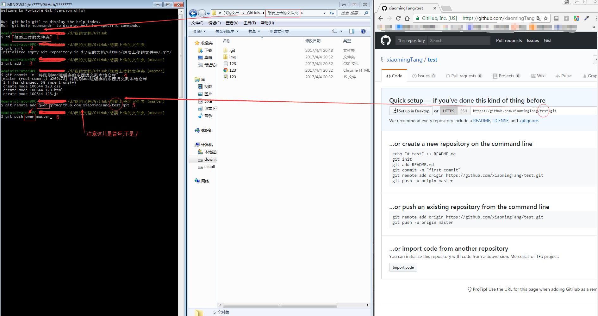

github客户端文件上传
简易教程
说明
本教程仅针对githubwindows客户端通过Bash命令行上传文件
事前工作
-
网页端新建仓库(repository)
这里，我将新仓库命名为"test"
-
安装github客户端
安装好客户端之后，我们应该有如右图两个应用

前一个是图形化界面应用,后一个是命令行
本教程就是专门针对后一个命令行中Bash命令上传
-
建议将文件夹选项中的"显示隐藏文件"打开
-
建议设置一个专用的文件夹,专门存放需上传到github上的文件
这里，我用的是D:\我的文档\GitHub
可以将命令行的起始位置设置为该文件夹
设置步骤为: 右键桌面上的Git Shell图标 >> 属性 >> 选择"快捷方式"选项卡 >> 修改起始位置并确认
-
命令行有4中脚本语言cmdGit BashPowerShellCustom
本教程介绍的是Git Bash，因此需要将命令行语言修改为Git Bash
方法步骤是: 打开github图形界面 >> 点击右上角的齿轮(设置) >> 选择option.. >> 修改默认Default Shell为Git Bash并确认
Git Bash上传
-
将你想要上传的文件装在一个文件夹中，整体复制到 之前设置的 专用文件夹D:\我的文档\GitHub下
-
打开git命令行
-
依次输入 一共6行命令
-
$ cd 你的文件夹的名字
用于更改当前目录 D:\我的文档\GitHub >> D:\我的文档\GitHub\你的文件夹
-
仓库的初始化,会自动在你的文件夹下新建一个.git隐藏文件夹
-
将该目录下所有文件添加到缓存，注意：最后面的点不能省略,那个点表示(当前目录下)所有文件
-
将缓存添加到本地仓库
-
$ git remote add 你自己随便取什么代号 git@github.com:你的github用户名/github线上仓库的名字.git
相当于给远程(线上)仓库取个简称，方便以后使用
-
$ git push 你刚取的代号 master
将本地仓库推送到远程(线上)仓库
-
整体效果
点击可切换大小图
